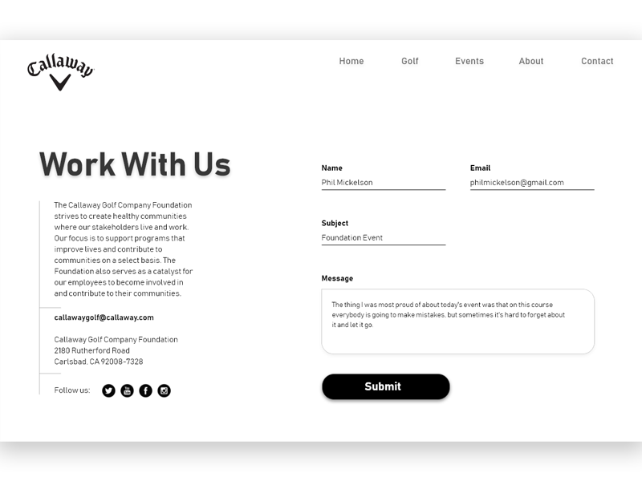
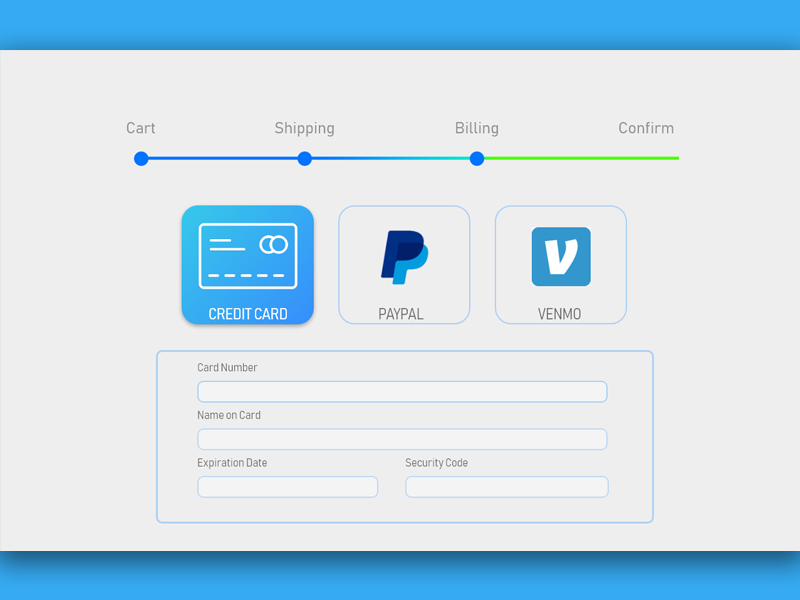

Forms
Checkout/Contact Forms
#1. Messaging Interface
This design is one of my personal favorites. It's clear and simple interface makes for an easy to use experience. The credit card section of the UI is understandable, consistent and comforting in the event a purchase is made. furthering the user experience, entering the card number would change the card company by card number recognition.

#2. Mobile Shopping Experience
Contact pages have been going on forever but some can still be hard to navigate at times. This UI takes a simple concept and keeps it that way. With heavy contrast in color and a simple page stucture, the user is sure to have no problem navigating the page.

#3. Create Account or Sign in
In a completely different checkout concept, this UI offer several different billing scenarios during the user's shopping checkout. The colorful bar near the top of the page acts as a timeline for users unsure what checkout step their on. This convenient design also offers customers additional checkout options including Venmo, a popular money transfer app. This checkout process is clean and efficient without being difficult to navigate.